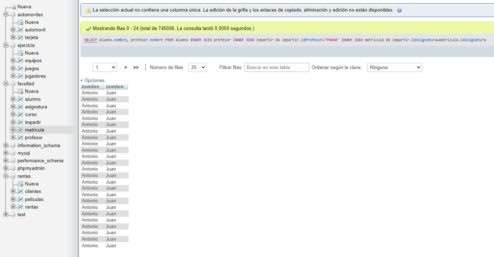

SELECT * FROM `alumno` WHERE 1
Consulta 1. Obtener el listado de todos los alumnos de la facultad

SELECT curso.nombreDescriptivo, asignatura.nombre FROM curso INNER JOIN asignatura ON curso.idCurso = asignatura.curso
Consulta 2. Obtener listado de cursos(nombre) y las asignaturas que tiene.

SELECT alumno.nombre, alumno.apellido1, alumno.apellido2 FROM alumno WHERE beca LIKE "si"
Consulta 3. Obtener el listado (nombre y apellidos) de alumnos que tengan beca.
SELECT profesor.nombre, profesor.apellido1, profesor.apellido2, tlfcontactoprof.telefono FROM profesor INNER JOIN tlfcontactoprof ON profesor.idProfesor = tlfcontactoprof.idProfesor
Consulta 4. Obtener el listado de PROFESORES(NOMBRE, APELLIDO) y su NUMERO de CONTACTO

SELECT alumno.nombre, alumno.apellido1, alumno.apellido2,asignatura.idAsignatura FROM alumno INNER JOIN matricula ON alumno.idAlumno = matricula.idAlumno INNER JOIN asignatura ON matricula.idAsignatura = asignatura.idAsignatura WHERE asignatura.idAsignatura LIKE "AS009"
Consulta 5. Obtener el listado de alumnos (TODOS LOS CAMPOS) que estan inscritos a la asignatura de programación AS009.

SELECT profesor.nombre, asignatura.nombre FROM profesor INNER JOIN impartir ON profesor.idProfesor=impartir.idProfesor INNER JOIN asignatura ON impartir.idAsignatura=asignatura.idAsignatura
Consulta 6. Obtener el listado de profesores y asignaturas que imparten.
SELECT asignatura.nombre, COUNT(matricula.idAlumno) AS TOT_ins FROM asignatura JOIN matricula ON asignatura.idAsignatura = matricula.idAsignatura GROUP BY asignatura.nombre ORDER BY TOT_ins DESC;
Consulta 7. Mostrar la asignatura que tiene mas alumnos inscritos y su total.

SELECT alumno.nombre, profesor.nombre FROM alumno INNER JOIN profesor INNER JOIN impartir ON impartir.idPRofesor="PR048" INNER JOIN matricula ON impartir.idAsignatura=matricula.idAsignatura;
Consulta 8. Obtener el listado de ALUMNOS que les da clase el PROFESOR con ID PRO48 (JOSE MANUEL).
SELECT curso.nombreDescriptivo AS "curso", asignatura.nombre AS "asignatura", profesor.nombre AS "profesor" FROM curso INNER JOIN asignatura ON asignatura.curso=curso.idCurso INNER JOIN profesor ON asignatura.coordinador=profesor.idProfesor;
Consulta 9. Obtener el listado de cursos, con asignatura, y el maestro que las imparte.
SELECT alumno.nombre, asignatura.nombre, profesor.nombre, curso.nombreDescriptivo FROM alumno INNER JOIN matricula ON alumno.idAlumno=matricula.idAlumno INNER JOIN asignatura ON matricula.idAsignatura=asignatura.idAsignatura INNER JOIN impartir ON impartir.idAsignatura=asignatura.idAsignatura INNER JOIN profesor ON impartir.idProfesor=profesor.idProfesor INNER JOIN curso ON curso.idCurso=asignatura.curso;
Consulta 10. Obtener el listado de alumnos, con asignaturas que cursa, PROFESOR que la imparte y curso al que pertenece.